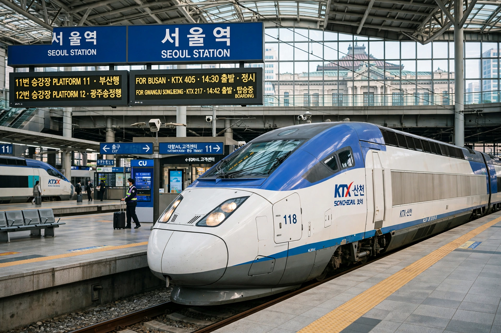

| Korail | |
|---|---|
 | |
| Full name | Korea Railroad Corporation |
| Founded | 1 January 2005 (corporatised; origins 1899) |
| Headquarters | Daejeon, South Korea |
Korail, the Korea Railroad Corporation, is South Korea's national railway operator, a state-owned corporation under the Ministry of Land, Infrastructure and Transport.
Korail runs intercity and commuter trains nationwide, including the KTX high-speed services (from 2004), ITX trains, Mugunghwa and Nuriro regional trains, freight, and parts of metropolitan subway networks in Seoul and Busan. Main stations include Seoul Station and Yongsan.
Korean railways began in 1899 with the Gyeongin line. After decades as a government bureau (Korean National Railroad, 1963), operations were corporatised as Korail in 2005, while infrastructure passed to the Korea Rail Network Authority.